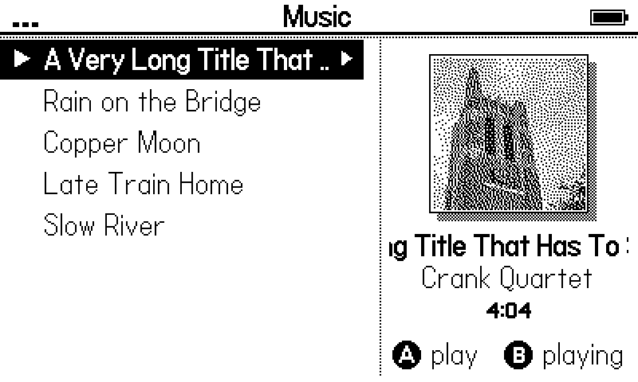
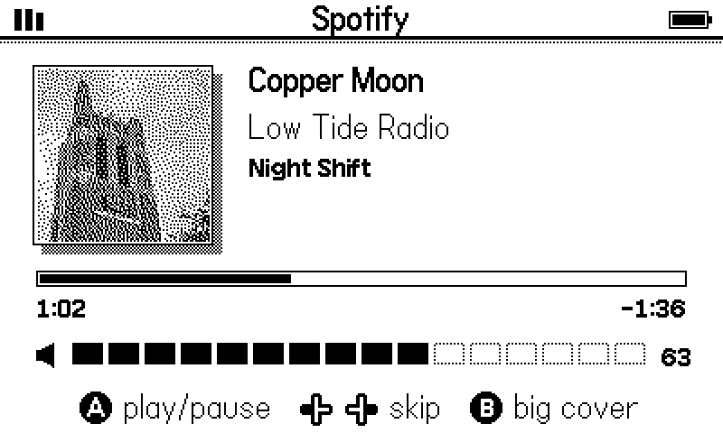
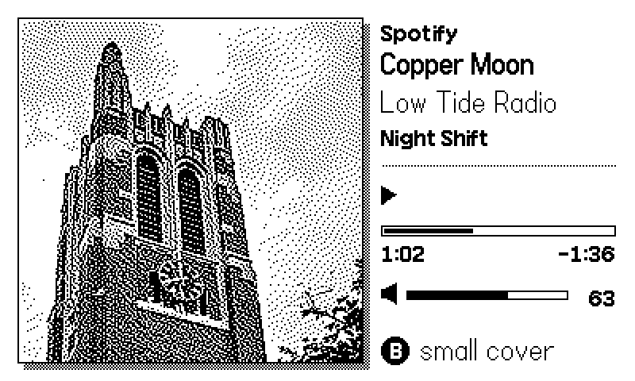

Free tool
Your own music on your Playdate. A small server on your Mac or Linux computer streams the songs in a folder over Wi-Fi. The Playdate shows the list with each song's real cover art in 1-bit, plays them, and the crank turns the volume.
It can also be a remote control: it shows what Spotify (or another music app) is playing on the computer, with the album cover, and lets you pause, skip and change the volume from the Playdate. Press Ⓑ to fill the screen with the cover.



The songs and cover in these pictures are made up for the screenshots; the cover is a photo of Beaumont Tower.
Version 1.0 · first release
No. Spotify does not allow its audio to be sent to other devices, and I did not want to break its rules. What works is the remote control: Crank Tunes shows and controls what Spotify is playing on your computer, while the sound comes out of the computer.
Your own files in the folder you choose. MP3s play as they are. If ffmpeg is installed on the computer, every song is also shrunk to about 96 kbps, which the Playdate's slow Wi-Fi handles more easily, and other formats (M4A, FLAC and more) work too. Only use music you own or have the right to use.
Anyone on the same Wi-Fi who knows the address could see your song list and pause your music, so use it on a network you trust, like your home Wi-Fi. The Linux server asks for a secret key on every request.
The Linux server can sit behind a Cloudflare Tunnel, which gives it a secure https:// address to put in server.txt. LINUX_SERVER.md explains how. Keep the key on if you do this.
The Mac app is not signed with a paid Apple developer account. Open it once and close the warning. Then open System Settings, go to Privacy & Security, scroll down and choose Open Anyway. You only do this once.
A real Playdate with a Mac server and with Spotify on the Mac, the Linux installer on a real Ubuntu laptop, and the Playdate's Simulator. Arabic song titles are shaped and shown right to left.
Made by Boraq Abdulmajeed. Free to use. Playdate is a trademark of Panic Inc.; this project is not made or endorsed by Panic. Questions or a bug? Get in touch.